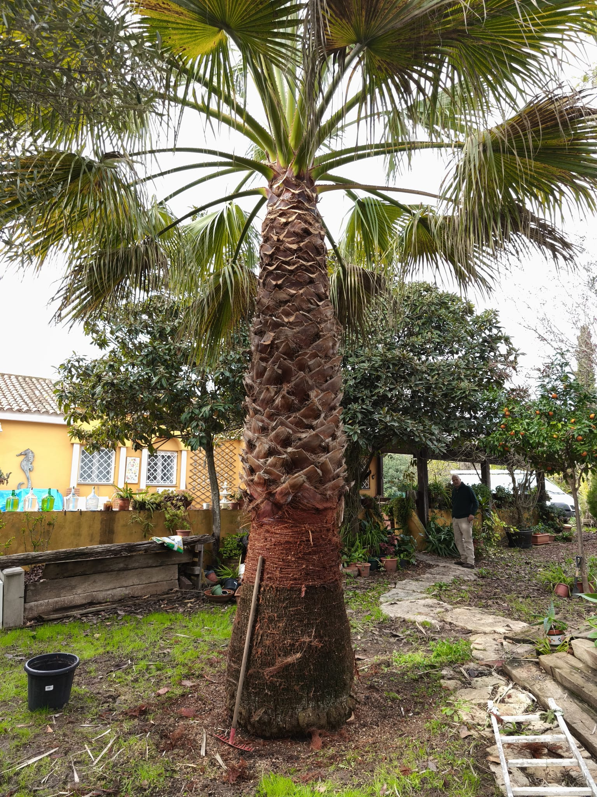
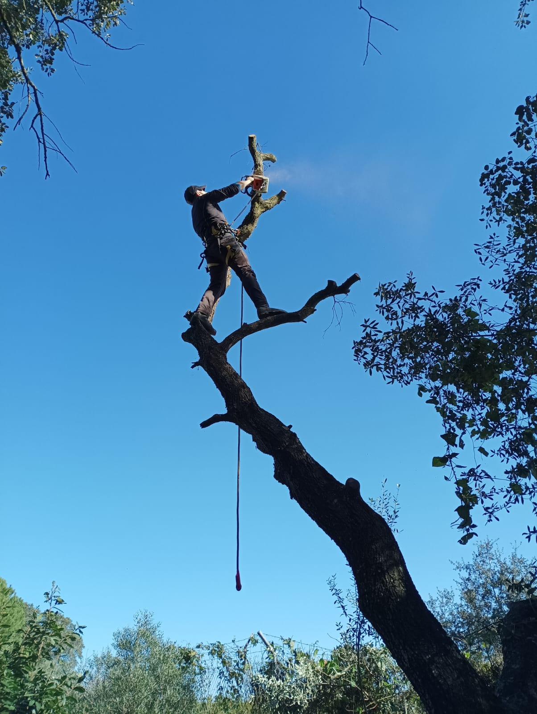
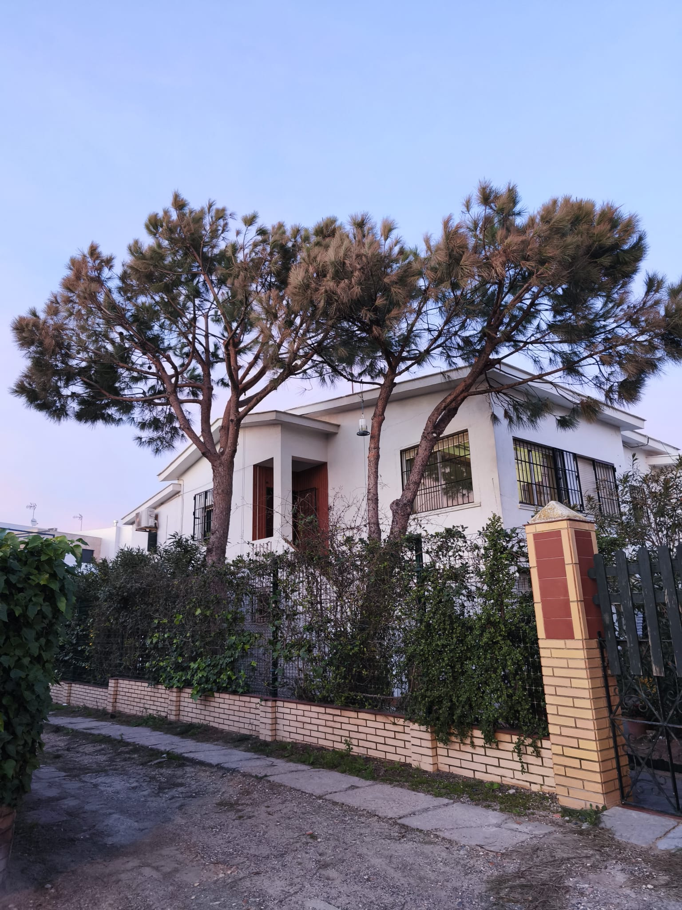
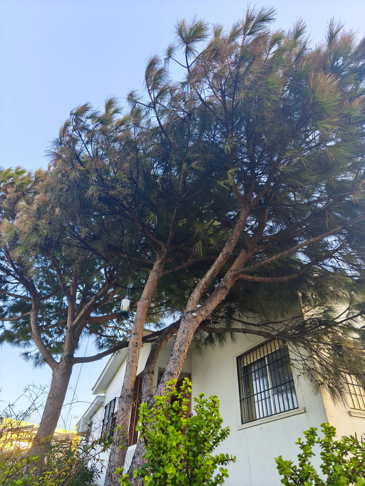
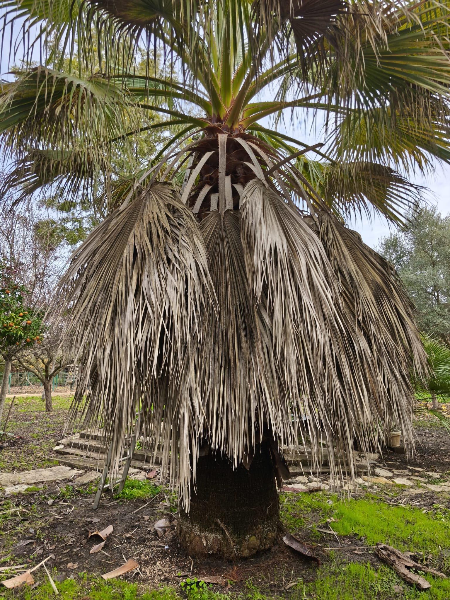

Trabajos recientes
Galería destacada
Un carrusel continuo con imágenes verticales de nuestros trabajos. Puede navegar con las flechas del teclado o con los controles laterales.




Nuestros Servicios
Poda de Palmeras
Ofrecemos servicios expertos de poda de palmeras para mantener su salud, seguridad y estética. Eliminamos hojas secas y peligrosas, asegurando un crecimiento vigoroso y una apariencia impecable para sus palmeras.


Tala de Árboles
Realizamos la tala de árboles de manera segura y eficiente. Ya sea por riesgo, enfermedad o planificación del paisaje, nuestro equipo cualificado utiliza las técnicas más seguras para retirar árboles de cualquier tamaño sin dañar su propiedad.


Mantenimiento de Jardines
Mantenga su jardín exuberante y saludable durante todo el año con nuestros servicios completos de mantenimiento. Desde cortar el césped y recortar setos hasta la fertilización y el control de plagas, nos encargamos de todo.


Contáctenos
¿Listo para transformar su espacio verde? Póngase en contacto con nosotros hoy para una consulta gratuita. Estamos aquí para ayudarle con todas sus necesidades de jardinería.